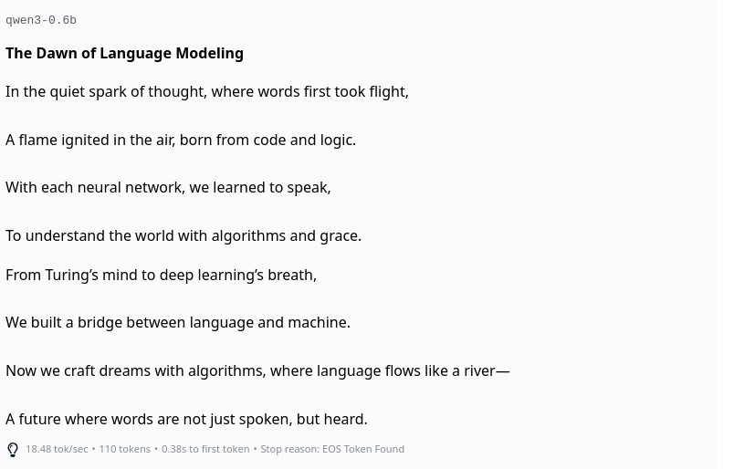

Prompting describes the utilization of the ability of language models to use zero or few-shot instrutions to perform a task. This ability, which we briefly touched on when we were discussing the history of language models (i.e., the paper by Radford et al. (2019)), is one of the most important aspects of modern large language models.
Prompting can be used for various tasks such as text generation, summarization, question answering, and many more.
Instruct-tuned models are trained on a dataset (for an example, see Figure 4.1) that consists of instructions and their corresponding outputs, seperated by special tokens. This is different from the pretraining phase of language models where they are trained on large amounts of text data without any specific task in mind. The goal of instruct-tuning is to make the model better at following instructions and generating more accurate and relevant outputs.

These finetuning-datasets are formatted into a specific structure, usually in the form of a chat template. As you can see in the following quite simple example from the SmolLM2-Huggingface-repo, the messages are separated by special tokens and divided into system-message and messages indicated by the relevant role:
{% for message in messages %}{% if loop.first and messages[0]['role'] != 'system' %}{{ '<|im_start|>system
You are a helpful AI assistant named SmolLM, trained by Hugging Face<|im_end|>
' }}{% endif %}{{'<|im_start|>' + message['role'] + '
' + message['content'] + '<|im_end|>' + '
'}}{% endfor %}{% if add_generation_prompt %}{{ '<|im_start|>assistant
' }}{% endif %}There are usually three types of messages used in the context of instruction tuning and the usage of instruct models:
Test the difference between instruct and non-instruct-models.
Do this by trying to get a gpt2-version (i.e., “QuantFactory/gpt2-xl-GGUF”) and a small Instruct-Model (i.e., “Qwen/Qwen3-0.6B” to write a small poem about the inception of the field of language modelling.
Use LM-Studio to test this. Do also play around with the system prompt and note the effect of changing it.
The results of a prompted call to a LM is highly dependent on the exact wording of the prompt. This is especially true for more complex tasks, where the model needs to perform multiple steps in order to solve the task. It is not for naught that the field of “prompt engineering” has emerged. There is a veritable plethora of resources available online that discuss different strategies for prompting LMs. It has to be said though, that the strategies that work and don’t work can vary greatly between models and tasks. A bit of general advice that holds true for nearly all models though, is to
Since the quality of results is so highly dependent on the chosen model, it is good practice to test candidate strategies against each other and therefore to define a target on which the quality of results can be evaluated. One example for such a target could be a benchmark dataset that contains multiple examples of the task at hand.
1. Test the above-mentioned prompting strategies on the MTOP Intent Dataset and evaluate the results against each other. The dataset contains instructions and labels indicating on which task the instruction was intended to prompt. Use a python script to call one of the following three models in LM-Studio for this:
Use the F1-score implemented in scikit learn to evaluate your results.
Since the dataset has a whole series of labels, use the following python-snippet (or your own approach) to extract only examples using the “GET_MESSAGE”-label:
import json
data = []
with open('data/de_test.jsonl', 'r') as f:
for line in f:
data.append(json.loads(line))
possible_labels = list(set([entry['label_text'] for entry in data]))
texts_to_classify = [
{'example': entry['text'],
'label': 'GET_MESSAGE' if entry['label_text'] == 'GET_MESSAGE'
else 'OTHER'} for entry in data
]2. You do sometimes read very specific tips on how to improve your results. Here are three, that you can find from time to time:
Check these strategies on whether they improve your results. If your first instruction already results in near-perfect classification, brainstorm a difficult task that you can validate qualitatively. Let the model write a recipe or describe Kiel for example.
3. Present your results
3. Upload your code to moodle
As we discussed before, small models can perform on an acceptable level, if they are finetuned appropriately.
A good way to do this is to use a larger model to generate synthetic data that you then use for training the smaller model. This approach, sometimes called “distillation” (Xu et al., 2024) has been used successfully in many applications, for example for improving graph-database queries (Zhong et al., 2024), for improving dataset search (Silva & Barbosa, 2024) or the generation of spreadsheet-formulas (Singh et al., 2024).
Since even the largest LLMs are not perfect in general and might be even worse on some specific niche tasks, evidence suggests that a validation strategy for data generated in this way is beneficial (Kumar et al., 2024; Singh et al., 2024).
Strategies to validate the synthetic data include:
Using your script for batch-testing different prompts, generate synthetic data for a emotion detection task based on Paul Ekman’s six basic emotions: anger, disgust, fear, happiness, sadness and surprise1.
The generated data should consist of a sentence and the emotion that is expressed in it. Start by generating two examples for each emotion. Validate these results and adapt them if necessary. Then use these examples to generate 10 samples for each emotion.
Use one of the above mentioned (non-manual) strategies to validate the data you generated.
Upload your results to Moodle.
1 Though this nomenclature has fallen a bit out of fashion
You might have encountered eerily similar answers from the language model, especially in the last task. Talking of it - why does the model return different answers to the same prompt at all if we do use pretrained-models in the first place? Shouldn’t the utilization of the frozen weight-matrix result in the same answer, every time we run the model with the same input?
Yes, it should. And it does.
Remember that a language model trained on language generation as we discussed in the first session ends in a softmax-layer that returns probabilities for each token in the vocabulary. The generation-pipeline does not just use the token with the highest probability though, but samples from this distribution. This means, that even if the input is identical, the output will be different every time you run the model.
The temperature parameter controls the steepness of the softmax-function and thus the randomness of the sampling process. A higher temperature value results in more random outputs, while a lower temperature value results in more “deterministic” outputs. The temperatur, indicated as a float between 0 and 12, is used to modulate the probabilities of the next token. This is done by adding a \(\frac{1}{Temp}\) factor to the model-outputs before applying the softmax.
2 Depending on the implementation, temperatures above 1 are also allowed. Temperatures above 1 are resultsing in strange behaviours - see Figure 4.3.
This effectively changes the Sofmax-fomula from
\[ p_{Token} = \frac{e^{z_{Token}}}{\sum_{i=1}^k e^{z_{i}}} \]
to \[ p_{Token}(Temp) = \frac{e^{\frac{z_{Token}}{Temp}}}{\sum_{i=1}^k e ^{\frac{z_{i}}{Temp}}} \]
Where
The effect of this temperature can be seen in Figure 4.3.

Most generation-frameworks do additionally provide a parameter called top_k or top_p. These parameters are used to limit the number of tokens that can be selected as the next token. This is done by sorting the probabilities in descending order and only considering the top k tokens or the top p percent of tokens.
Temperature is the mayor setting to control a LLMs “creativity” though.
Using the script provided for generating synthetic data, test the effect of the temperature parameter on the output of the model.
While temperature controls the randomness of model outputs, a more fundamental challenge emerges when language models generate plausible yet incorrect information - a phenomenon known as hallucination.
Hallucinations occur when language models produce confident, plausible-sounding outputs that are factually incorrect or unsupported by their training data. These aren’t random errors - they’re systematic failures that arise from the statistical nature of language modeling itself.
Consider this example: When asked “What is Adam Tauman Kalai’s birthday?”, state-of-the-art models confidently produce different incorrect dates across multiple attempts, even when explicitly asked to respond only if they know the answer (Kalai et al., 2025).
Kalai et al. (2025) demonstrate that hallucinations emerge from the fundamental objective of language model training. They show that generating valid outputs is inherently harder than classifying output validity - a task where errors are well-understood in machine learning.
The key insight: even with perfect training data, the cross-entropy objective used in pretraining naturally leads to errors on certain types of facts. Specifically:
Arbitrary Facts: Information without learnable patterns (like birthdays of obscure individuals) will be hallucinated at rates approximately equal to the fraction of such facts appearing exactly once in training data. If 20% of birthday facts appear only once, expect ~20% hallucination rate on birthdays.
Poor Models: When model architectures cannot adequately represent certain patterns, systematic errors emerge. For example, models using only token-based representations struggle with character-level tasks like counting letters in “DEEPSEEK”.
Chlon et al. (2025) provide a complementary information-theoretic perspective. They show that transformers minimize expected conditional description length over input orderings rather than the permutation-invariant description length. This makes them “Bayesian in expectation, not in realization.”
Their framework introduces practical metrics for predicting hallucinations:
A key finding: hallucinations decrease by approximately 0.13 per additional nat of information, making the phenomenon quantitatively predictable rather than mysterious.
Beyond pretraining, Kalai et al. (2025) argue that post-training and evaluation procedures actively reinforce hallucinations. Most benchmarks use binary grading (correct/incorrect) with no credit for expressing uncertainty. This creates an “epidemic” of penalizing honest uncertainty - models that guess when unsure outperform those that appropriately abstain.
Consider two models:
Model B will outperform A on most current benchmarks, despite being less trustworthy.
Test hallucination behavior on a small model using LM-Studio:
Upload your observations to Moodle.